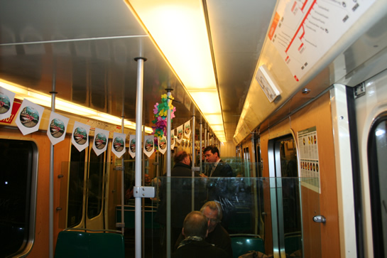

40 jaar Rotterdamse metro!
- maandag 01 december 2008 10:09
- Geschreven door Joachim
Vandaag bestaat de Rotterdamse metro 40 jaar. Een mijlpaal. Werd begonnen met een metrolijntje van nog geen zes kilometer lang tussen het Centraal Station en het Zuidplein, inmiddels is het metronet uitgegroeid tot een toonaangevend regionaal lightrailnetwerk met vertakkingen naar diverse randgemeenten van Rotterdam.
Ter ere van het 40-jarig bestaan van de Rotterdamse metro, werd vanmiddag het boek "40 jaar metro in Rotterdam" gepresenteerd in de RET Servicewinkel. Het boek is geschreven door Jan van Huijksloot en Joachim Kost en omvat een compleet beeld van het Rotterdamse metrobedrijf van toen en nu. De eerste boeken werden overhandigd aan algemeen directeur Pedro Peters en portefeuillehouder Verkeer & Vervoer Jeanet Baljeu. Ook werden er exemplaren overhandigd aan RET'ers die de start van de metro in 1968 meegemaakt hebben.
Aansluitend was er een rit voor genodigden met de metrorijtuigen 5202 en 5260, die speciaal voor deze gelegenheid voorzien waren van prachtige bloemstukken, beschikbaar gesteld door de stichting RoMeO. Op de richtingfilm stond de tekst "40 jaar metro". Ook de binnenzijde was de metro aangekleed met feestartikelen. De reclamelijsten werden voorzien van historische foto's. De werkgroep Metro van de stichting RoMeO droeg zorg voor deze feestelijke aankleding.
Foto's met dank aan Tristan
Het speciaal versierde rijtuig 5202 op station Beurs Calandlijn spoor 2.
Opnieuw rijtuig 5202, nu op station Pernis, tijdens een korte stop.

Het metrorijtuig was aan de binnenzijde versierd met onder meer speciale metrovlaggetjes.
Vrijdagavond werd nog hard gewerkt om de metrorijtuigen op tijd af te hebben. Op de foto rijtuig 5260 in de remise 's-Gravenweg op spoor 324-1.
De bijzondere metro reed van station Beurs (Calandlijn) spoor 2 naar Blaak spoor 5. Daar werd gekeerd en koers gezet naar de verbindingsboog, die loopt tussen de stations Blaak en Leuvehaven. Vervolgens werd vanaf daar via de Erasmuslijn doorgereden naar keergebied Aveling. Nadat daar op spoor 15 gekeerd was, werd de rondrit via de Beneluxlijn compleet gemaakt. Op alle stations werd luid getyfoneerd.
De tyfonerende metrotrein met de uitbundige versiering trok veel bekijks bij de reizigers op de perrons.
De metroreizigers van vandaag kregen op de stations Beurs en Zuidplein croissants uitgedeeld in verband met het metrojubileum. Ook op de DRIM's stond vandaag de tekst: "Hoera, de metro bestaat vandaag 40 jaar!".
Retmetro.nl feliciteert de RET en al haar medewerkers van harte met het 40-jarig bestaan van de Rotterdamse metro. Op naar de volgende veertig jaar!
Open dag
Morgen organiseert de stichting RoMeO een open dag in de remise Hillegersberg. U bent tussen 11.00 uur en 17.00 uur van harte welkom om het oudste Rotterdamse metrorijtuig te bezichtigen. Remise Hillegersberg is gevestigd aan de Kootsekade 19 in Rotterdam en het makkelijkst te bereiken met het openbaar vervoer (tramlijn 4 en tramlijn 8).